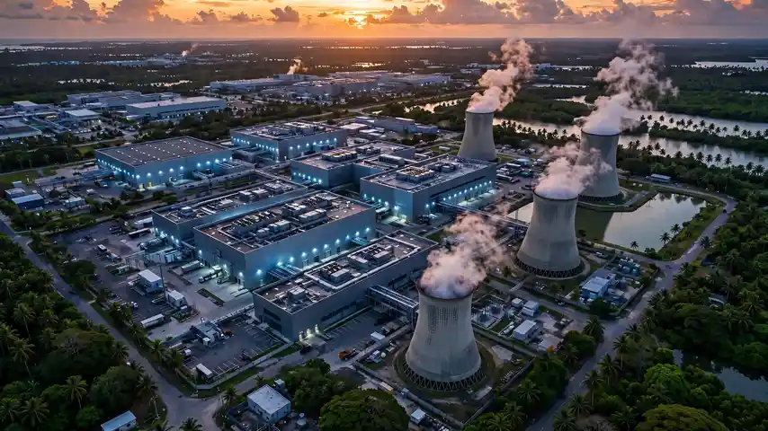

From whisky to wattage: Taiwan's Agencia Comercial Spirits signs up to $400M for AI compute in Indonesia
- Who: Agencia Comercial Spirits Ltd (Nasdaq: AGCC), via its wholly-owned subsidiary AGCC Singapore Pte. Ltd.; the counterparty is an unnamed Singapore-based AI computing provider.
- What: A long-term agreement for phased access to AI computing capacity in Indonesia, following a preliminary arrangement announced July 17, 2026.
- When: Signed October 16, 2026; five-year term per capacity batch, starting on delivery and acceptance.
- Total value: US$300 million to US$400 million over the full term, assuming all capacity is confirmed, delivered and accepted — excluding taxes and additional infrastructure and operating costs. Prices for years four and five can be renegotiated.
- Upfront commitment: Advance payments capped at US$150–160 million, backed by a company guarantee. Each delivery notification becomes payable within 14 days of signatures; advances are credited in 60 equal monthly instalments.
- The fine print: The group pays colocation, power, networking and maintenance; hardware title stays with the provider; payments aren't tied to customer usage; early termination is restricted and costly; the deal itself generates no customer revenue, and uptake, profitability and cash flow are 'not assured.'
On October 16, 2026, Agencia Comercial Spirits Ltd announced that its wholly-owned Singapore subsidiary, AGCC Singapore Pte. Ltd., had signed a long-term agreement with a Singapore-based AI computing provider to secure access to AI computing capacity in Indonesia — a deal worth roughly US$300 million to US$400 million over its full term. It is one of the more unusual AI infrastructure deals of the year, because the buyer is a whisky company.
The deal
The agreement follows a preliminary arrangement the company disclosed on July 17, 2026, and provides for phased deployment: a five-year term commencing on delivery and acceptance of each batch of capacity. The headline US$300–400 million figure assumes every contemplated batch is confirmed, delivered and accepted, and excludes taxes and additional infrastructure and operating costs. Part of the contemplated capacity is still subject to written confirmation, and prices for the fourth and fifth years may be renegotiated — if no new prices are agreed, the scheduled prices continue.
Money first, customers later
The payment terms are where this deal gets serious. Advance payments carry a contractual ceiling of US$150 million to US$160 million — explicitly not the total contract value. Each delivery notification's amount becomes unconditionally payable within 14 days after both parties sign it, and advances already paid are credited against monthly charges in 60 equal monthly instalments from the first invoice for that capacity. The parent company guarantees AGCC Singapore's payment obligations, and an existing deposit is carried forward.
Then there is the liability stack. The group bears colocation, electricity, networking and operations-and-maintenance costs. Title to the underlying hardware remains with the provider. Payment obligations for accepted capacity are not contingent on customer utilization or receipts. Early termination is restricted and may require substantial compensation; even choosing not to proceed with additional capacity can trigger procurement, cancellation and financing costs — and, in some cases, taking over assets already procured at cost. Refunds are subject to contractual set-off and may arrive partly as non-cash asset transfers.

Why it matters
Agencia Comercial Spirits is a Nasdaq-listed company with two pillars: established premium whisky operations — bottled and cask whisky procurement, cask-to-bottle, brand-authorized bottling, packaging and sales in Taiwan and select international markets — and the AI Computing Infrastructure Initiative it launched in early 2026 through subsidiaries in Singapore, Indonesia and other jurisdictions. All of its historical operating revenue comes from whisky; the AI business is still in development and, in the company's own words, subject to significant business, financing, construction, technology, regulatory, customer demand and execution risks.
The release is unusually blunt about the asymmetry: the agreement "creates a long-term commitment to secure AI computing capacity and does not itself generate customer revenue," and deployment depends on delivery and acceptance, resource availability, funding, facility readiness and regulatory requirements. Successful deployment, customer uptake, revenue, profitability and positive cash flow are, quote, not assured. As TipRanks noted, the structure puts substantial long-term balance-sheet and liquidity commitments on a company whose AI business has yet to produce meaningful revenue — a case study in how aggressively small-cap firms are pivoting into the AI compute gold rush.
Frequently asked questions
What is Agencia Comercial Spirits?
A Nasdaq-listed company (ticker AGCC) with two businesses: established premium whisky operations — bottled and cask whisky procurement, cask-to-bottle, brand-authorized bottling, packaging and sales in Taiwan and select international markets — and an AI computing infrastructure and cloud-services arm it has been building since early 2026. Its historical revenue comes from whisky; the AI business is still in development.
How much is the deal worth, and how is it paid for?
Up to US$300 million to US$400 million over a five-year term, assuming every batch of capacity is confirmed, delivered and accepted — excluding taxes and extra infrastructure costs. Advance payments are capped at US$150–160 million: each delivery notification's amount becomes payable within 14 days of both parties signing it, then credited against monthly charges in 60 equal instalments. The parent company guarantees the subsidiary's payments.
What is the risk for the company?
Payment obligations for accepted capacity are not tied to customer usage or revenue — the bills come due whether or not customers rent the compute. The hardware stays owned by the provider, early termination is restricted and can trigger substantial compensation, and the agreement itself generates no customer revenue. The release warns that deployment, uptake, profitability and positive cash flow are not assured.